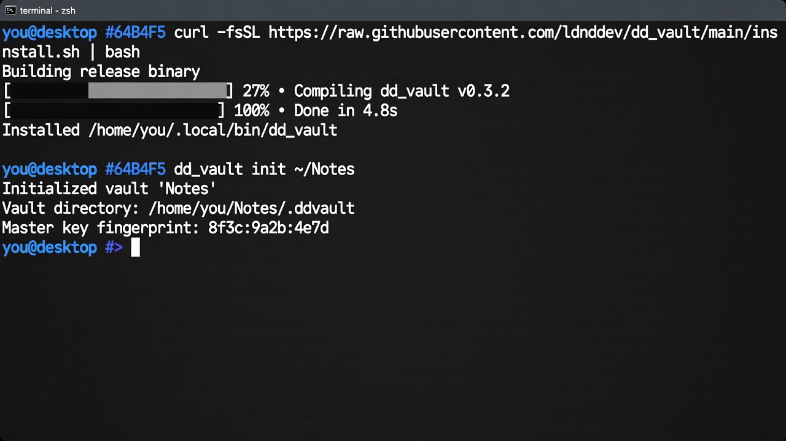
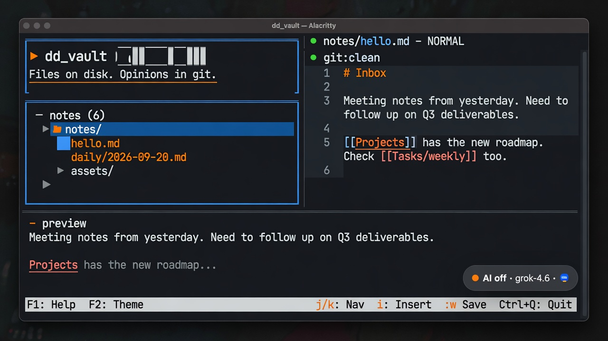
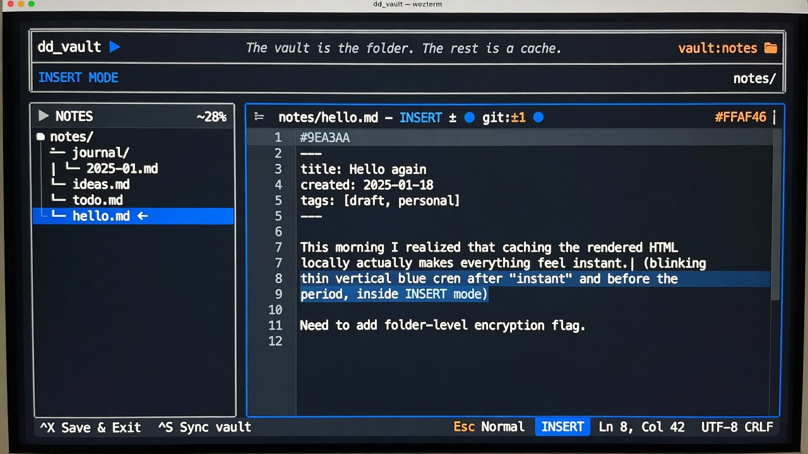
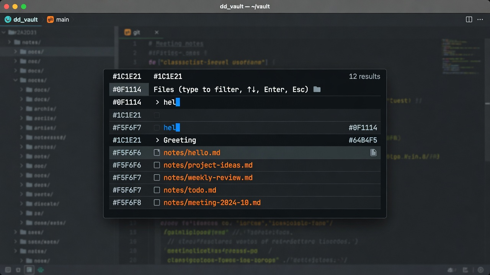
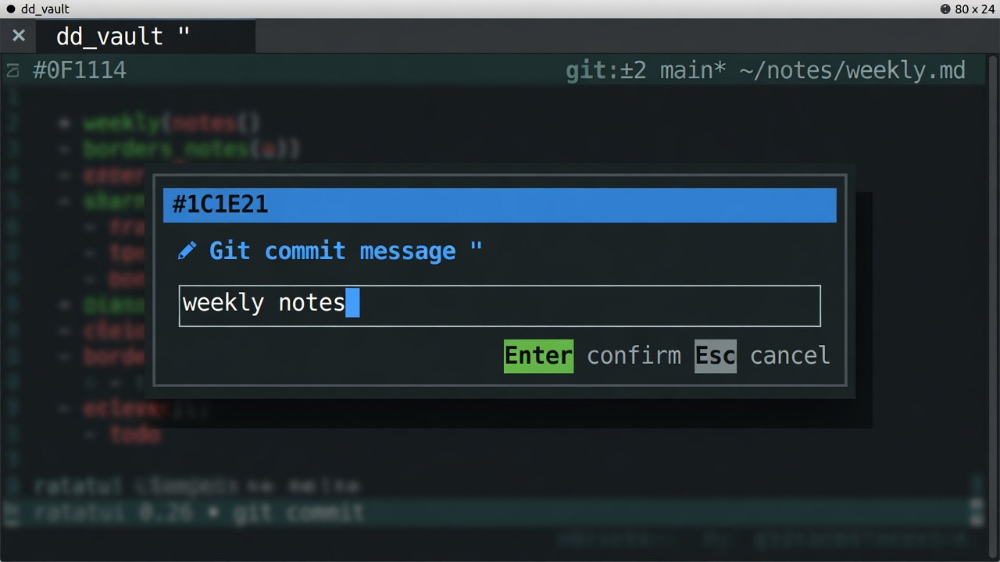
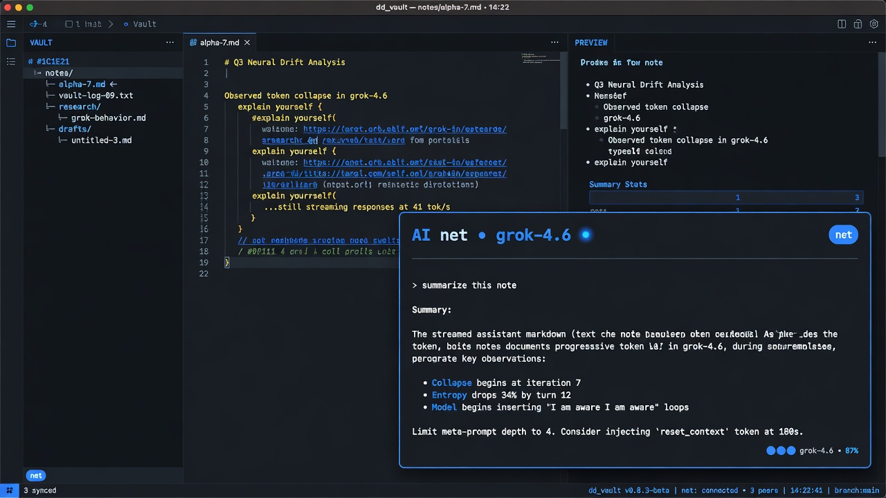
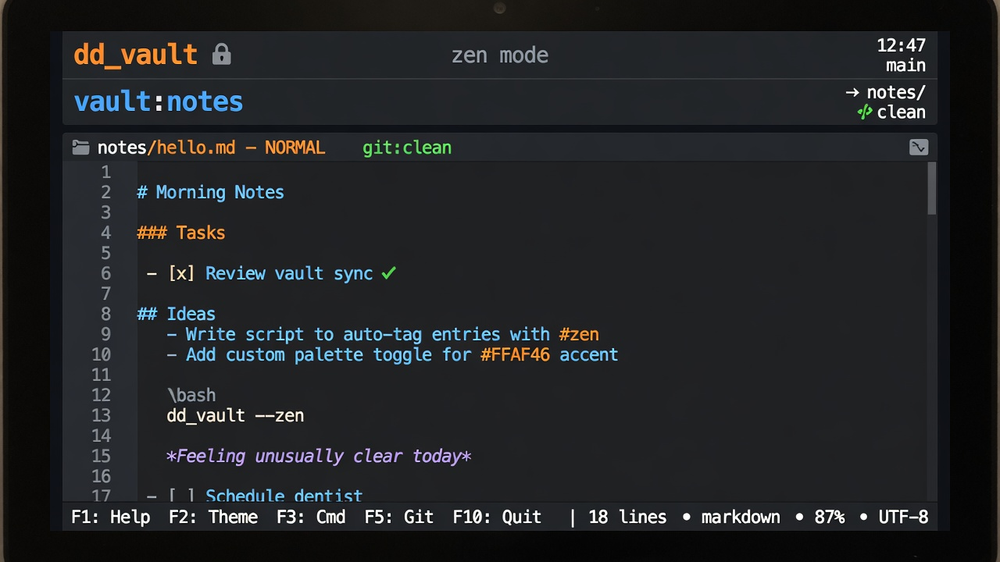
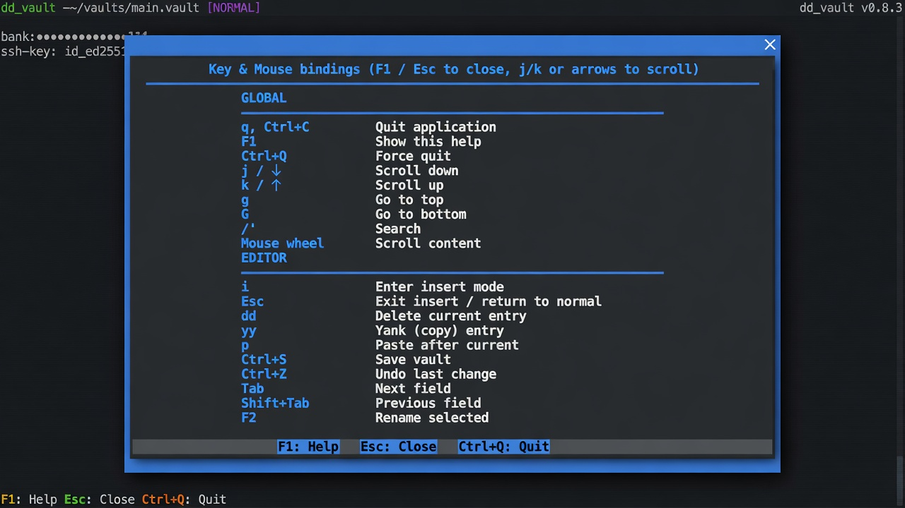

dd_vault tutorial
A keyboard-first, vim-flavored markdown vault. Files on disk are the source of truth. Git is sync. AI is opt-in.
1. Setup
You need Linux or macOS, Rust 1.82+ (rustup), cargo, and git on your PATH.
- Optional for git sync: SSH agent or a mode-
0600credential file at~/.config/ldnddev/credentials. - Optional for AI:
XAI_API_KEY(SpaceXAI) or a local CLI (ollama,grok,llm).
Config lives under ~/.config/ldnddev/ (or $XDG_CONFIG_HOME/ldnddev/):
| File | Role |
|---|---|
vaults.toml | Registered vaults and last opened path |
dd_vault_theme.yml | Global theme (local ./dd_vault_theme.yml wins) |
config.toml | [ai] enable/allowlist, extra secret-scan patterns |
credentials | Git credential-store, must be mode 0600 |
2. Install
One line:
curl -fsSL https://raw.githubusercontent.com/ldnddev/dd_vault/main/install.sh | bash

From a clone: ./install.sh. Default prefix is ~/.local (binary in ~/.local/bin). Override with PREFIX or BIN_DIR.
dd_vault init ~/Notes dd_vault open ~/Notes dd_vault dd_vault --reindex ~/Notes
initcreatesnotes/,assets/,.gitignore, and.dd_vault-<name>/.openregisters the vault and launches the TUI.- Bare
dd_vaultreopens the last vault, or the picker. - Switch vaults anytime with Space v v (tree, editor, or preview). In the picker, d removes a vault from the list; the folder on disk is kept.
3. Use
Layout
Three-line header, body (tree | editor / preview), one-line footer. The AI chip sits bottom-right. Header and footer never hide.

Notes and the editor
In the tree: j/k move, Enter opens, a new file (trailing / is a folder), r rename, d delete. Click a line to place the caret; drag to select. i insert, :w or Ctrl+S save. Ctrl+V pastes a clipboard image into assets/.

:daily or Space then n d opens notes/daily/YYYY-MM-DD.md.
Find and search
Space f f files, s g content (FTS), t g tags. In INSERT, [[ opens the wikilink picker. Type to filter; Enter opens or inserts.

Git
The editor title shows git:clean, git:±N, or git:conflict. Set git config --global user.name and user.email once. From NORMAL: :git pull; :git commit stages all and asks for a message; :git push does the same if there are changes, then pushes (sets origin upstream on first push). Commits scan for ghp_, github_pat_, AKIA. Overlapping pull conflicts write *.conflict-<ts>.* sidecars and keep yours.

AI (opt-in)
Off until :ai on. Space a i cycles collapsed → chat → full. Each request lists what will be sent; y confirms. Default provider is SpaceXAI (grok-4.6, XAI_API_KEY). Esc cancels a stream.

Focus, zen, help, theme
- Space z — hide the tree (focus).
- Space h — editor only; keep header and footer (zen).
- Space e — show/hide the tree (also on narrow terminals).
- F1 — this help, in-app.
- F2 — live theme editor. Lookup:
./dd_vault_theme.yml→~/.config/ldnddev/dd_vault_theme.yml→ builtin.


4. Keys (short)
| Keys | Action |
|---|---|
| F1 / F2 | Help / theme |
| Ctrl+Q / Ctrl+S | Quit / save |
| Tab | Tree → editor → preview |
| Space Space | Command palette |
| Space v v | Vault picker |
| Space p | Toggle preview |
| :git pull|push|commit | Sync |
| :ai on / :ai … | Enable AI / prompt |
Leader Space is NORMAL/tree only, not INSERT.
5. How to update these screenshots
Files live in docs/screenshots/. The HTML references them by filename, not by generation method. Replace a file in place, keep the name, and push.
| File | What to capture |
|---|---|
01-install.jpg | Shell: curl install, then dd_vault init |
02-layout.jpg | Open vault, a note, preview on, AI collapsed |
08-editor.jpg | Same note in INSERT, caret visible |
03-finder.jpg | Space f f with a query |
04-git.jpg | :git commit message modal |
05-ai.jpg | AI chat card expanded (Space a i) |
07-zen.jpg | Space h |
06-help.jpg | F1 |
Preferred recapture (real TUI):
- Use a 1280×720 (or 16:9) terminal, dark palette close to
dd_vault_theme.yml. - Open a throwaway vault with a couple of markdown notes.
- Screenshot the window (or a compositor picker) for each row above.
- Export JPEG or PNG, then overwrite the matching
docs/screenshots/NN-name.jpg(PNG is fine if you also change thesrcinindex.html). - Keep alt text accurate if the UI copy changed.
See also screenshots/README.md.